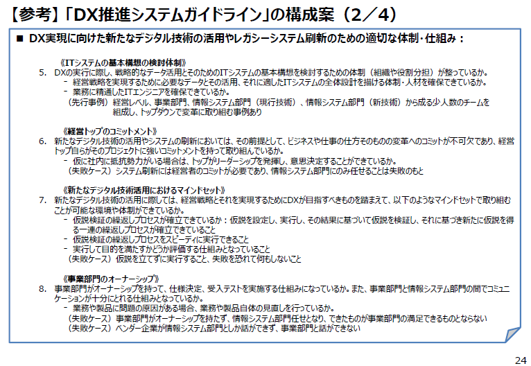
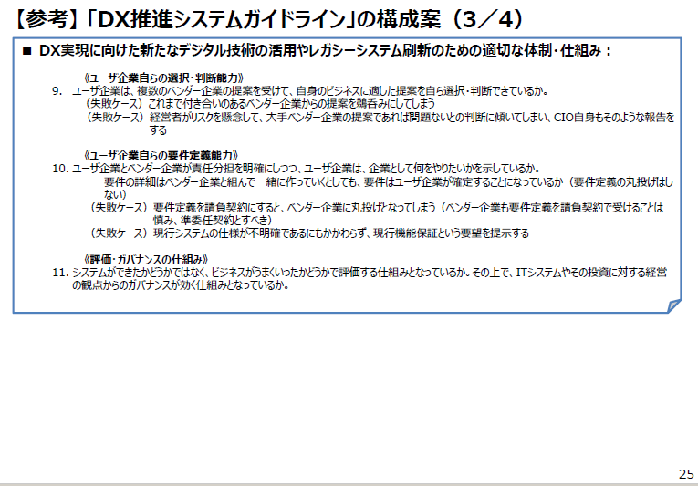
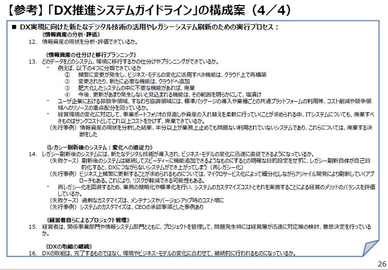

- DAX21_デジタルトランスフォーメーション
- 改版履歴
- 2018年12月5日 初版
- 参照
- デジタルフォーメーションに 必要な技術と人材
IPA IPA 社会基盤センターセンター長 片岡 晃 - DXレポート～ITシステム「2025年の崖」の克服とDXの本格的な展開～
2018年9月7日 デジタルトランスフォーメーションに向けた研究会
- デジタルトランスフォーメーションに向けたスキル変革の方向性（検討用）
- No.1

- デジタルトランスフォーメーション（ＤＸ）のスキル変革の方向性を、「家の構造（屋根と梁、柱、土台）」をモチーフに整理
- No.２
- ■ 基本コンセプトとアクティビティ
- ③，④＜家の柱＞
- ・それを支える柱として、「創造性・人間性」と「生産性・信頼性」がある。
- 〔創造性・人間性の説明〕
- ・ 創造性・人間性とは、個人個人の能力が社会の中で創造的かつ健全に開花し、多様なチーム、組織、コミュニティに価値が提供できることと、その中で生きがいを持って協働できる働きやすい社会を目指すこと。
- ・人間中心は、従来の顧客起点ではなく、社会を構成する一人一人（顧客だけなく、経営者も従業員も）の生きる意味を考えることが社会の価値につながるということ。ITはそれをエンパワーするものであるべき。
- 〔生産性・信頼性の説明〕
- ・ 生産性・信頼性とは、技術力をもって生産性と品質・信頼性を担保するとともに、常に適切な技術とスキルを学習し、それを社会に還元することを誇りとし、次世代に継承する努力を怠らない学習する組織・社会をめざすこと。
- ・２本の柱でイノベーティブな社会変革を人間中心で仮説設定・検証を繰り返しながら進めていく。特に技術中心で考えてきた日本の企業に対して人間中心イノベーションを個人・組織に植えつけることが必要。本質を理解せずに形だけ真似しても成果は創出できない。
- ⑤~⑨＜家の中の活動＞（価値創出のための活動）
- 〔高速仮説検証サイクル（プログラミング的思考）〕
- ・イノベーション指向／デザイン思考でどのような社会に変えていくのかという価値と実現の基本アイデアを設定し、アジャイルのプロトタイプやIoTプラット
- フォームでのシミュレーション、システムズエンジニアリングのモデルをとおして高速仮説検証を回して実際の現実との擦り合わせを行いながら妥当性を確認し、方向転換をいとわず、実践を進める。あらゆる組織・人（企業，自治体．経営者，社員，現場担当者，消費者，住民など）が、それぞれの立場でプログラミング的思考を発揮し仮説検証を繰り返しながら、よりよい社会・組織を目指して活動を進めていく。
- ・社会やマーケットの真の課題や要求は、デザイン思考におけるフィールドワークやエスノグラフィー的なアプローチを有効に活用し、現場の声と社会的な課題や理想とを常に突き合わせながら仮説設定と検証を繰り返していく。
- ・さらに妥当性の検証は、ビッグデータを用いて、データサイエンスやAIでデータを分析・モニタリングすることにより事実やエビデンスベースでしっかりと行い、誤りはすぐに正し、仮説の再設定、方針の変更を厭わずに行う。
- 〔イノベーション指向（デザイン思考・サービスサイエンス）〕
- ・どのような社会・生活に変えていくのかという提供すべき価値と実現方式の基本アイデアをフィールドワークとプロトタイピング等を用いて創出するとともに、それを社会やマーケットに効果的かつ適切なサービスとして提供する。
- 〔アジャイル・マインド＆プロセス〕
- ・価値あるソフトウェアの提供を顧客と開発チーム間のプロトタイプ/フィードバック・ループにもとづき継続的に開発改善を進めていく。このアプローチは現在、
- ソフトウェア開発だけでなく製品サービス企画と保守を含めたDev&Opsや、経営組織全体で取り組むアジャイル経営に発展している。
- 〔システムズエンジニアリング〕
- ・システムズエンジニアリングは、複数のシステムが複雑に統合されたシステム系を計画・設計・開発・保守するための方法論。Connected Industriesや規模や複雑さの伴う業種・プロジェクトでは必須（社会全体も多様なシステムの複合系といえる）。システムズエンジニアリングは、妥当な機能性の設計・実現と機能安全や信頼性、セキュリティを含むDependabilityや品質の実現と継続的な改善のためにも有効なアプローチである。
- 〔API・産業/業務サービスインターフェース（IoTプラットフォーム）〕
- ・各産業のさまざまな業務分野ごとに標準的なAPIがサービスインターフェースとしてオープンに提供されることでAPIエコノミーが活性化される。それらにもとづく分野特化プラットフォームや共通基盤プラットフォームがビジネスとして成立するとともに、その上で新たな価値を生むアプリケーションの企画・開発も容易になる。現実世界のすべてをネットワークでつなぐとともにサイバー世界にそのモデルを保持することで、現場・業務・企業経営・産業連携の各層でシミュレーションしながら全体最適で問題解決や経営判断をおこなうための本来のIoTのプラットフォームとなる。
- ⑩，⑪＜土台＞（活動のベースとなるもの）
- 〔データサイエンス・AI〕
- ・第４次産業革命には、デバイスから経営まで各レイヤーに渡ってデータサイエンス的なアプローチが必要であるのでベース（土台）にある。
- ・データには、IoTデバイスに対する低レベルなものから、特定現場機能、特定業務機能、業務プロセス、マーケティングデータ、経営情報の各層で必要なデータレベルがある。それらのデータを機械学習や人工知能（AI）等の技術を用いてビジネスに利活用する。
- 〔セキュリティ〕
- ・セキュリティも基盤として必要であるので同じくベースにある。
- ・セキュリティにもデータの暗号化などの低レベルなものから高レベルなものまである。
- デジタルフォーメーションに 必要な技術と人材
- １．はじめに
- 様々な情報が活用される社会
- デジタルトランスフォーメーション（DX）とは何か

- デジタルテクノロジー（IoT・AI・DBなど）を駆使したビジネスの変革
- ビジネスモデルの変化、個人の生活や社会構造にまで影響が及ぶ
- 日本の現状：DXの遅れ
- AIは米国、中国がリード
- 課題先進国日本とDX
- ２．組込み産業を取り巻く環境、技術、人材
- 組込みソフトウェア産業の事業環境の変化
- 組込みソフトウェアの複雑化の傾向
- 組込みソフトウェアの複雑化傾向への対応方針
- 今、重要な技術、今後強化／獲得したい技術


- 今後強化したい技術は「AI技術」「IoTシステム構築技術」「セーフティ&セキュリティ」「システムズエンジニアリング」

- 重要度の伸びは、「ビッグデータの収集・分析・解析」技術
- 現在不足している／今後不足が予想される人材

- 「ビジネスをデザインできる人材」「システム全体を俯瞰して思考できる人材」が不足

- 人数の視点では「IoT等新技術の専門技術者」等専門技術者の不足感が大きく拡大

- 「システム全体を俯瞰して思考できる人材」「ビジネスをデザインできる人材」「IoT等新技術の専門技術者」など人材育成が課題
- ３．デジタルトランスフォーメーションに必要な技術、必要な人材
- DXとシステム環境の変化
- 新たなアプローチ：システムズエンジニアリング

- 「システムを成功させるための複数の専門分野にまたがるアプローチと手段である」
- 航空・宇宙領域で確立した企画・開発のアプローチを汎用的に体系化したもの⇒欧米を中心に発展
- つながる世界のさまざまな課題
- つながる世界では、製品供給者が想定しない、把握できない課題が発生
- つながる世界で求められる品質

- IoTの特徴
- システムが日々変化！
接続される機器の種類や個数が膨大で、システムが日々刻々と変化 - 様々な環境で利用！
屋内/屋外、高地や寒冷地など様々な環境、幼児から高齢者まで幅広い層で利用 - 10年以上の長期利用！
自動車・家電製品・工場のシステムなど長期に利用
- IoT高信頼化・品質確保に向けて「つながる世界の開発指針」の展開

- 政府施策への展開
- • IoT推進コンソーシアムのIoTセキュリティガイドラインへの展開（2016/7）
- • ERABサイバーセキュリティガイドラインへの展開(2017/4)
- • その他の政府レベルのガイドラインへの展開
- 国際標準化
- • 国内外の産業界や海外の研究機関と連携した国際標準化
- • JTC1/SC27,SC41に提案(2018/5)
- 海外連携
- • 米NISTと連携したIoTについての検討
- • 独IESEと連携した実証実験
- 産業界への普及
- • CCDS 4分野の分野別セキュリティガイドライン（2016/6）
- • チェックリスト化、社内ルール化への支援(2017/3)
- • その他の分野別ガイドラインの策定への支援
- スコープ拡大
- • IoT高信頼化に向けた機能要件と機能のまとめ(2017/5)
- • 利用時品質のまとめ（HCD-netとの共創）(2017/3)
- • IoTの品質確保の検討（IVIA,CCDS等と共創）(2018/3)
- • データ品質の検討（データ流通推進協議会等と協調予定)
- 必要となる人材スキル：「ITSS+（プラス）」
- 地域の課題解決と新ビジネス創出
- 経済産業省・IPAは2016年から、IoT等で地域課題を解決し、新ビジネスを創出する取組を地方版IoT推進ラボとして選定し、各ラボを支援（全国74地域）
- ラボが取り組む様々なテーマ
- 大阪市IoT推進ラボ
- 札幌市IoTイノベーション推進コンソーシアム
- ４．社会変革に向けた新たな潮流の把握と発信
- 社会変革に向けた新たな潮流の把握と発信
- DXレポート～ITシステム「2025年の崖」の克服とDXの本格的な展開～（サマリー）
- 2025年の崖

- 多くの経営者が、将来の成長、競争力強化のために、新たなデジタル技術を活用して新たなビジネス・モデルを創出・柔軟に改変するデジタル・トランスフォーメーション（＝DX）の必要性について理解しているが・・・
・既存システムが、事業部門ごとに構築されて、全社横断的なデータ活用ができなかったり、過剰なカスタマイズがなされているなどにより、複雑化・ブラックボックス化
・経営者がDXを望んでも、データ活用のために上記のような既存システムの問題を解決し、そのためには業務自体の見直しも求められる中（＝経営改革そのもの）、現場サイドの抵抗も大きく、いかにこれを実行するかが課題となっている
→ この課題を克服できない場合、DXが実現できないのみでなく、2025年以降、最大１２兆円／年（現在の約３倍）の経済損失が生じる可能性（2025年の崖）。 - 放置シナリオ
- ユーザ：
- ・爆発的に増加するデータを活用しきれず、デジタル競争の敗者に
・多くの技術的負債を抱え、業務基盤そのものの維持・継承が困難に
・サイバーセキュリティや事故・災害によるシステムトラブルやデータ滅失・流出等のリスクの高まり
- ベンダー：
- ・技術的負債の保守・運用にリソースを割かざるを得ず、最先端のデジタル技術を担
う人材を確保できず
・レガシーシステムサポートに伴う人月商売の受託型業務から脱却できない
・クラウドベースのサービス開発・提供という世界の主戦場を攻めあぐねる状態に
- DX実現シナリオ
- 【DXシナリオ】2025年までの間に、複雑化・ブラックボックス化した既存システムについて、廃棄や塩漬けにするもの等を仕分けしながら、必要なものについて刷新しつつ、DXを実現することにより、2030年実質GDP130兆円超の押上げを実現。
- DXの推進に向けた対応策について
- 「2025年の崖」、「DX実現シナリオ」をユーザ企業・ベンダー企業等産業界全体で共有し、政府における環境整備を含め、諸課題に対応しつつ、DXシナリオを実現。
- （参考）レガシーシステムが存在することによるリスク・課題
- DXレポート～ITシステム「2025年の崖」の克服とDXの本格的な展開～（簡易版）
- 1. 検討の背景と議論のスコープ

- ・あらゆる産業において、新たなデジタル技術を使ってこれまでにないビジネス・モデルを展開する新規参入者が登場し、ゲームチェンジが起きつつある。こうした中で、各企業は、競争力維持・強化のために、デジタルトランスフォーメーション（DX：Digital Transformation）をスピーディーに進めていくことが求められている。
- ・このような中で、我が国企業においては、DXを進めるべく、デジタル部門を設置する等の取組みが見られる。しかしながら、PoC（Proof of Concept: 概念実証。戦略仮説・コンセプトの検証工程）を繰り返す等、ある程度の投資は行われるものの実際のビジネス変革には繋がっていないというのが多くの企業の現状である。
- ・今後DXを本格的に展開していく上では、DXによりビジネスをどう変えるかといった経営戦略の方向性を定めていくという課題もあるが、これまでの既存システムが老朽化・複雑化・ブラックボックス化する中では、➀新しいデジタル技術を導入したとしても、データの利活用・連携が限定的であるため、その効果も限定的となってしまうといった問題が指摘されている。また、既存システムの維持、保守に資金や人材を割かれ、新たなデジタル技術を活用するIT投資にリソースを振り向けることができないといった問題も指摘されている。
- ・さらに、これを放置した場合、➁今後、ますます維持・保守コストが高騰する、いわゆる技術的負債の増大とともに、➂既存システムを維持・保守できる人材が枯渇し、セキュリティ上のリスクも高まることも懸念される。
- ・もちろん、既に既存ITシステムのブラックボックス状態を解消している企業や、そもそも大規模なITシステムを有していない企業、ITシステムを導入していない分野でデジタル化を進めている企業等、上記のような問題を抱えていない企業も存在するが、我が国全体を見た場合、これらの問題を抱えている企業は少なくないものと考えられる。
- 【参考】DXの定義

- “企業が外部エコシステム（顧客、市場）の破壊的な変化に対応しつつ、内部エコシステム（組織、文化、従業員）の変革を牽引しながら、第３のプラットフォーム（クラウド、モビリティ、ビッグデータ／アナリティクス、ソーシャル技術）を利用して、新しい製品やサービス、新しいビジネス・モデルを通して、ネットとリアルの両面での顧客エクスペリエンスの変革を図ることで価値を創出し、競争上の優位性を確立すること”
- “企業が生き残るための鍵は、DXを実装する第3のプラットフォーム上のデジタルイノベーションプラットフォームの構築において、開発者とイノベーターのコミュニティを創生し、分散化や特化が進むクラウド2.0、あらゆるエンタープライズアプリケーションでAIが使用されるパーベイシブAI、マイクロサービスやイベント駆動型のクラウドファンクションズを使ったハイパーアジャイルアプリケーション、大規模で分散した信頼性基盤としてのブロックチェーン、音声やAR/VRなど多様なヒューマンデジタルインターフェースといったITを強力に生かせるかにかかっています。”
- 2. DXの推進に関する現状と課題
- 2.1 DXを実行する上での経営戦略における現状と課題

- ・DXを実行するに当たっては、新たなデジタル技術を活用して、どのようにビジネスを変革していくかの経営戦略そのものが不可欠である。
- ・しかしながら、DXの必要性に対する認識は高まっているものの、ビジネスをどのように変革していくかの具体的な方向性を模索している企業が多いのが現状と思われる。
- ・こうした中で、例えば、経営者からビジネスをどのように変えるかについての明確な指示が示されないまま「AIを使って何かできないか」といった指示が出され、PoCが繰り返されるものの、ビジネスの改革に繋がらないといったケースも多いとの指摘がなされている。
- 2.2 既存システムの現状と課題

- ・ITシステムが、技術面の老朽化、システムの肥大化・複雑化、ブラックボックス化等の問題があり、その結果として経営・事業戦略上の足かせ、高コスト構造の原因となっている「レガシーシステム」となり、DXの足かせになっている状態（戦略的なIT投資に資金・人材を振り向けられていない）が多数みられる。
- ・DXを進める上で、データを最大限活用すべく新たなデジタル技術を適用していくためには、既存のシステムをそれに適合するように見直していくことが不可欠である。
- 【参考】既存システムがDXの足かせとなっている理由
- 2.2.2既存システムの問題点
- 2.2.3既存システムの問題点の背景
- 2.2.4既存システムの問題の難解さ
- 2.2.5既存システムの運用・保守に割かれてしまう資金・人材
- ・我が国企業のIT関連費用の８０％は現行ビジネスの維持・運営（ラン・ザ・ビジネス）に割り当てられている。
- ・この結果、戦略的なIT投資に資金・人材を振り向けられていない。

- ・技術的負債（Technical debt）とは、短期的な観点でシステムを開発し、結果として、長期的に保守費や運用費が高騰している状態のことを指す。本来不必要だった運用保守費を支払い続けることを意味し、一種の負債ととらえている。
- ・既存システムを放置した場合、技術的負債が増大することが懸念される。
- 2.3 ユーザ企業における経営層・各部門・人材等の課題
- 2.4 ユーザ企業とベンダー企業との関係
- 2.5 情報サービス産業の抱える課題

- 【参考】情報サービス産業の概況

- ・我が国情報サービス産業は、実態的にはユーザ企業組織の一部機能を構成しており、SIを主とした既存ITシステムの受託開発に適した構造的特徴を持っている
- 情報サービス産業は企業数27,375、全売上高25兆円、従業員数97万人の産業に成長した。
- 単に技術者を提供するだけではなく、顧客プロジェクトの規模の変化に対応すべく顧客側の人件費の変動費化に貢献している。これは欧米においてユーザ企業側が人員を確保している構図と逆になっている。
- 顧客の代わりにリスクを請け負う受託契約という形態も他国には見られない特殊なものとなっている。
- 2.6 DXを推進しない場合の影響
- 3. 対応策の検討
- 3.1 「DX推進システムガイドライン」の策定

- 【参考】「DX推進システムガイドライン」の構成案

- 
- 
- 
- 【参考】負債を解消し、デジタルトランスフォーメーションにつなげるためには
- 3.2 「見える化」指標、診断スキームの構築
- 【参考】「見える化」指標のイメージ
- 3.3 DX実現に向けたITシステム構築におけるコスト・リスク低減のための対応策

- 3.3.4 協調領域における共通プラットフォームの構築
- 3.4 ユーザ企業・ベンダー企業の目指すべき姿と双方の新たな関係

- 3.4.3 ユーザ企業とベンダー企業の新たな関係
- 【参考】アジャイル開発における主な契約モデルの特徴
- 【参考】アジャイル開発における契約パターン技術研究組合モデル
- 3.5 DX人材の育成・確保3.6 ITシステム刷新の見通し明確化
- 3.6 DX実現シナリオ
- 4. 今後の検討の方向性
- DXレポート～ITシステム「2025年の崖」の克服とDXの本格的な展開～（本文）
- 目次
- 検討の背景と議論のスコープ
- DXの推進に関する現状と課題
- DXを実行する上での経営戦略における現状と課題
- 模索過程にある経営戦略
- 既存システムの現状と課題
- DXの足かせとなっている既存システム
- 既存システムの問題点
- 既存システムの問題点の背景
- 既存システムの問題の難解さ
- 既存システムの運用・保守に割かれてしまう資金・人材
- ユーザ企業における経営層・各部門・人材等の課題
- 経営層の危機意識とコミットにおける課題
- CIOや情報システム部門における課題
- 事業部門と情報システム部門の役割分担
- ユーザ企業におけるIT人材の不足
- ユーザ企業とベンダー企業との関係
- ユーザ企業からベンダー企業への丸投げ
- ユーザ企業とベンダー企業の責任関係
- アジャイル開発における契約関係上のリスク
- 情報サービス産業の抱える課題
- 情報サービス産業の概観
- グローバル・クラウドの成長
- ベンダー企業における人員の逼迫、スキルシフトの必要性
- ビジネス・モデルの転換の必要性
- DXを推進しない場合の影響
- 既存システムの残存リスク
- 既存ITシステムの崖（2025年の崖
- 対応策の検討
- 「DX推進システムガイドライン」の策定
- 「見える化」指標、診断スキームの構築
- DX実現に向けたITシステム構築におけるコスト・リスク低減のための対応策
- 刷新後のシステムが実現すべきゴールイメージの共有
- 廃棄することの重要性
- 刷新におけるマイクロサービス等の活用
- 協調領域における共通プラットフォームの構築
- ユーザ企業・ベンダー企業の目指すべき姿と双方の新たな関係
- DXを通じてユーザ企業が目指すべき姿
- ベンダー企業の目指すべき姿
- ユーザ企業とベンダー企業の新たな関係
- ユーザ企業とベンダー企業間における契約
- トラブル後の対応：ADRの活用促進
- DX人材の育成・確保
- ITシステム刷新の見通し明確化
- 今後の検討の方向性
- おわりに